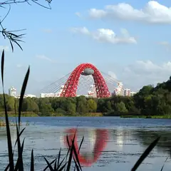

Районы · СЗАО
Куда сходить на северо-западе Москвы
35 мест на северо-западе Москвы: 14 компьютерных клубов, 7 мест для прогулки, 5 развлечений и 4 кофейни. Например, Парк «Северное Тушино», Ландшафтный парк «Митино» и «Серебряный Бор». 11 готовых планов начинаются здесь. Больше всего мест у станций «Сходненская», «Октябрьское поле» и «Строгино».
- 35 мест
- 11 планов
- 14 клубов
Места 21
ул. Свободы, 50
Парк у Химкинского водохранилища с подводной лодкой-музеем и экранопланом.
Подробнее и маршрут: Парк «Северное Тушино»Позвать сюда: Парк «Северное Тушино»
Фото: Mardiver, CC0 · Wikimedia Commons
ул. Барышиха
Большой парк с прудом, амфитеатром и катком зимой.
Подробнее и маршрут: Ландшафтный парк «Митино»Позвать сюда: Ландшафтный парк «Митино»
Фото: AVRS, CC BY-SA 3.0 · Wikimedia Commons

Таманская ул.
Сосновый бор у Москвы-реки: пляжи, озеро Бездонное и прогулки по лесу.
Подробнее и маршрут: Серебряный БорПозвать сюда: Серебряный Бор
Фото: Massalim / Fr Maxim Massalitin, CC BY-SA 3.0 · Wikimedia Commons
Сходненский тупик
Природная котловина-амфитеатр в Тушине — эффектный вид сверху.
Подробнее и маршрут: Сходненская чашаПозвать сюда: Сходненская чаша
Фото: barmalei1971, CC BY-SA 3.0 · Wikimedia Commons
Волоколамское ш., 52
Лесопарк с родниками, прудами и старинной усадьбой на северо-западе.
Подробнее и маршрут: Покровское-СтрешневоПозвать сюда: Покровское-Стрешнево
Фото: Zlidnevart, CC BY-SA 4.0 · Wikimedia Commons
Сходненская ул., 50
Новое
Семейная кофейня в паре минут от метро «Сходненская»: авторские десерты, небольшое меню от повара, стильный интерьер и музыка. Алкоголя нет, в сб до 23:00.
Светлогорский пр., 13, стр. 7
Новое
Кофейня-лофт в парке усадьбы Братцево: мягкие диваны, книги, завтраки и веранда, по вечерам тематические встречи. Сначала гуляем по старому парку над Сходней. 9–22.
Сходненская ул., 56 (ТРЦ «Калейдоскоп», 3 этаж)
Новое
Круглогодичный крытый каток в ТРЦ у метро «Сходненская»: прокат и заточка на месте, недорогие сеансы. В этом же центре есть кинотеатр — можно совместить.
Подробнее и маршрут: Каток в ТРЦ «Калейдоскоп»Позвать сюда: Каток в ТРЦ «Калейдоскоп»
ул. Свободы, 85, стр. 3
КруглосуточноНовое
Лазертаг в антураже военного бункера у «Планерной», открыт круглосуточно. Час игры — 1 100 ₽, для взрослых есть сюжетный «Курс молодого бойца», одиночкам — открытые игры.
Подробнее и маршрут: Лазертаг Арена «Военный бункер»Позвать сюда: Лазертаг Арена «Военный бункер»
ул. Маршала Бирюзова, 22, корп. 1
Новое
Цветочное кафе-бар у метро «Октябрьское Поле»: сытные завтраки, до полудня к ним — игристое, днём салаты и коктейли, летом терраса. Ежедневно 9–23.
Тушинская ул., 17 (5 этаж)
Новое
Экшн-игры у «Тушинской», где надо и бегать, и думать: «Пять жизней» (от 6000 ₽ за четверых) и «Фильтр Тоналя». Есть командные прятки.
Волоколамское ш., 89, корп. 1
КруглосуточноНовое
Большие срубы на 12–15 гостей: парная на дровах, свой бассейн, караоке и бильярд, а во дворике одного — дубовая бочка. Работает круглосуточно.
ул. Кулакова, 20, корп. 1
Новое
Камерный бильярдный клуб в Строгине: четыре стола для русского бильярда и пул, шашлыки, пиво и вино, без шума огромных залов. Час игры 1080–1500 ₽, 13–00.
Подробнее и маршрут: Транзит ВремениПозвать сюда: Транзит Времени
Небесный бул., 1, корп. 1
Американский дайнер 60-х с тюркской кухней от Folk Team у стадиона «Спартак».
ул. Кулакова, 16, корп. 1
Новое
Большой грузинский ресторан в Строгине: живая музыка, огромные порции, чебуреки и харчо, своя пекарня, летняя и зимняя веранды. Для праздника компанией. 12–00.
ул. Маршала Мерецкова, 6
Новое
Кофейня у метро «Октябрьское Поле»: фильтр со смородиной, раф с лавандой, канеле и сырники. Много мест и спокойно — подходит для долгого разговора.
Митинская ул., 16
Новое
Караоке-клуб в Митино: диджей, кухня и звукорежиссёр, который выставит микрофон даже новичку. Можно спеть на северо-западе, не выезжая в центр. До 6 утра.
Авиационная ул., 79, корп. 1
Ресторан на берегу Москвы-реки в Щукине: свой маяк, тёплый шатёр и летняя терраса.
Подробнее и маршрут: River Club MoscowПозвать сюда: River Club Moscow
Митинская ул., 51
Новое
Кафе бельгийских вафель в Митине: сладкие и сытные — с форелью, барбекю, штруделем, завтраки весь день и комбо-обеды. Пн–пт с 8:00, выходные с 9:00.
парк Покровский берег, Москва
Длинная набережная с видом на Строгино и Серебряный Бор.
Подробнее и маршрут: Покровский берегПозвать сюда: Покровский берег
Шелепихинская наб.
Набережная напротив Москва-Сити: смотровые площадки у воды и панорама небоскрёбов.
Подробнее и маршрут: Шелепихинская набережнаяПозвать сюда: Шелепихинская набережная


Готовые планы 11
- Ландшафтный парк «Митино» · Парк · м. Волоколамская
- 13 минут пешкомLuna · Караоке-клуб
Круг вокруг пруда в ландшафтном парке «Митино», а потом караоке Luna: диджей, кухня и звукорежиссёр, который выставит микрофон даже новичку.
Открыть план: Парк «Митино» и караоке рядомПозвать сюда: Парк «Митино» и караоке рядом
Фото: AVRS, CC BY-SA 3.0 · Wikimedia Commons
- Парк «Северное Тушино» · Парк · м. Планерная
- 2 минуты пешкомЛазертаг Арена «Военный бункер» · Лазертаг
Подводная лодка-музей и экраноплан в парке «Северное Тушино», а рядом — круглосуточный лазертаг в декорациях военного бункера, час игры — 1 100 ₽.
Открыть план: Подлодка и лазертаг в бункереПозвать сюда: Подлодка и лазертаг в бункере
Фото: Mardiver, CC0 · Wikimedia Commons
- Сходненская чаша · Природный памятник · м. Сходненская
- 17 минут пешкомИду лесом · Кофейня в усадьбе
Вид сверху на Сходненскую чашу — природный амфитеатр в Тушине, — потом по старому парку над Сходней в «Иду лесом»: мягкие диваны, книги и завтраки.
Открыть план: Сходненская чаша и кофейня в усадьбеПозвать сюда: Сходненская чаша и кофейня в усадьбе
Фото: barmalei1971, CC BY-SA 3.0 · Wikimedia Commons
- ДеЛаперуз · Кофейня-кафе · м. Сходненская
- 6 минут пешкомКаток в ТРЦ «Калейдоскоп» · Крытый каток
Авторские десерты в семейной кофейне «ДеЛаперуз», где не продают алкоголь, а через пять минут — крытый каток в «Калейдоскопе», который работает круглый год.
Открыть план: Десерты и крытый каток у «Сходненской»Позвать сюда: Десерты и крытый каток у «Сходненской»
- Парк «Северное Тушино» · Парк · м. Планерная
Подводная лодка-музей и экраноплан в парке у Химкинского водохранилища.
Открыть план: Подлодка и экранопланПозвать сюда: Подлодка и экраноплан
Фото: Mardiver, CC0 · Wikimedia Commons
- Серебряный Бор · Лесопарк и пляжи · м. Крылатское
Тихие тропы среди сосен, озеро Бездонное и берег Москвы-реки — красиво в любое время года, а летом можно ещё и на пляж.
Открыть план: Сосновый бор у рекиПозвать сюда: Сосновый бор у реки
Фото: Massalim / Fr Maxim Massalitin, CC BY-SA 3.0 · Wikimedia Commons
- Чичилаки · Грузинский ресторан · м. Строгино
- 10 минут пешкомТранзит Времени · Бильярд и бар
Огромные порции харчо и чебуреков под живую музыку в «Чичилаки», а потом на той же улице тихий клуб «Транзит Времени» — русский бильярд и пул без шума больших залов.
Открыть план: Строгино: харчо и бильярдПозвать сюда: Строгино: харчо и бильярд
- Оквест · Экшн-квест · м. Тушинская
- 25 минут пешкомТюрки Diner · Дайнер
«Пять жизней» в «Оквесте», где надо и бегать, и думать, а потом американский дайнер «Тюрки Diner» у стадиона «Спартак».
Открыть план: Экшн-квест и дайнер у «Спартака»Позвать сюда: Экшн-квест и дайнер у «Спартака»
- Таёжные бани · Бани на дровах · м. Мякинино
Двухэтажные срубы «Таёжных бань» на 12–15 человек: парная на дровах, свой бассейн, караоке и бильярд, а работают они круглосуточно.
Открыть план: Сруб с бассейном на компаниюПозвать сюда: Сруб с бассейном на компанию
- Тюрки Diner · Дайнер · м. Спартак
Американский дайнер 60-х с тюркской кухней — до или после матча.
Открыть план: Дайнер у «Спартака»Позвать сюда: Дайнер у «Спартака»
- River Club Moscow · Ресторан на берегу · м. Щукинская
Ресторан на берегу Москвы-реки в Щукине со своим маяком: летом — терраса у воды, в холода — тёплый шатёр.
Открыть план: Маяк на Москве-рекеПозвать сюда: Маяк на Москве-реке
Компьютерные клубы 10 из 14
ул. Генерала Глаголева, 19 (вход со двора)
Круглосуточно
Около 25 ПК в общем зале и 5 в VIP, PS5 с OLED-телевизором на 120 Гц. Вход со двора. Работает круглосуточно.
Подробнее и маршрут: Объект Октябрьское полеПозвать сюда: Объект Октябрьское поле
Таллинская ул., 18 (2 этаж)
Круглосуточно
36 ПК от RTX 3060 до RTX 4070 SUPER, две PS5, общий зал, буткемп и VIP. Работает круглосуточно.
Подробнее и маршрут: Colizeum СтрогиноПозвать сюда: Colizeum Строгино
Тушинская ул., 17 (ТЦ «Праздник», цокольный этаж)
Круглосуточно
18 ПК на RTX 3060 в общем зале, 15 на RTX 3070 в VIP, три PS5, буткемп и бар. Работает круглосуточно.
Подробнее и маршрут: Colizeum ТушинскаяПозвать сюда: Colizeum Тушинская
Шелепихинская наб., 34, корп. 3
Круглосуточно
Colizeum в жилом квартале у Москвы-реки, -1 этаж. Работает круглосуточно.
Подробнее и маршрут: Colizeum ШелепихаПозвать сюда: Colizeum Шелепиха
просп. Маршала Жукова, 19, корп. 1
Круглосуточно
31 игровое место, мониторы 320 Гц, RTX 5070 Ti и отдельные комнаты. Работает круглосуточно.
Подробнее и маршрут: CyberSpot Маршала ЖуковаПозвать сюда: CyberSpot Маршала Жукова
ул. Народного Ополчения, 23, корп. 1 (цокольный этаж)
Круглосуточно
Клуб сети CyberX в цокольном этаже на Народного Ополчения. Работает круглосуточно.
Подробнее и маршрут: CyberX Народного ОполченияПозвать сюда: CyberX Народного Ополчения
ул. Свободы, 48, стр. 1 (цокольный этаж)
Круглосуточно
20 ПК, две PS5, бар, своя парковка и турниры. Работает круглосуточно.
Подробнее и маршрут: Everest GamingПозвать сюда: Everest Gaming
Сходненская ул., 35, корп. 1 (3 этаж)
Круглосуточно
30 ПК и две PS5: залы Normal, VIP на RTX 3060 и Bootcamp на RTX 3080. Работает круглосуточно.
Подробнее и маршрут: True Gamers СходненскаяПозвать сюда: True Gamers Сходненская
Митинская ул., 40, корп. 1 (вход с Дубравной ул.)
Круглосуточно
Кибер-арена сети Venom у метро «Митино», вход с Дубравной улицы. Работает круглосуточно.
Подробнее и маршрут: Venom Cyber Zone МитиноПозвать сюда: Venom Cyber Zone Митино
Пятницкое ш., 43
Районный клуб сети Colizeum в Митине — пара минут пешком от метро «Пятницкое шоссе».
Подробнее и маршрут: Colizeum МитиноПозвать сюда: Colizeum Митино
Как позвать
- Выбери план, место или событие — в карточке адрес, цены и маршрут в Яндекс Картах.
- Нажми «Позвать сюда» — соберётся приглашение-игра для свидания или голосование для компании.
- Отправь ссылку в любой мессенджер: тебе ответят, а компания отметит, куда и когда может. Бесплатно и без регистрации.